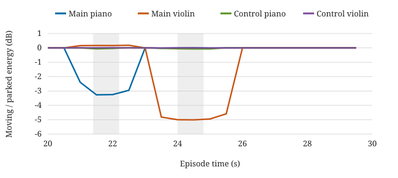
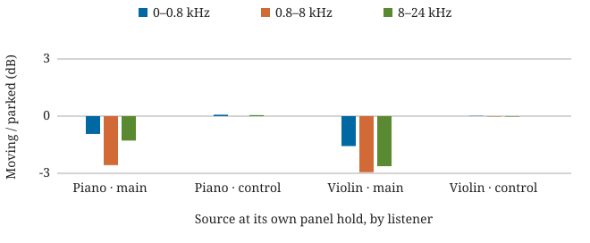
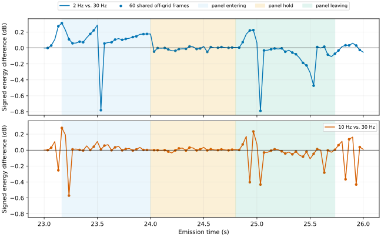

From scripts to shared scene time
Actors, objects and sound events follow one timeline. Camera and listener trajectories determine how each observer experiences the episode.
A Synthetic Audio-Visual Immersive Dataset of Dynamic Scenes
Immersive scene modeling requires synchronized visual and auditory observations under changing viewpoints and scene conditions. Obtaining such observations and references for controlled scene changes remains challenging. We introduce SynAVID, a synthetic audio-visual immersive dataset comprising eight indoor and outdoor scenes. Each minute-scale episode combines fixed camera arrays and moving trajectories with synchronized, viewpoint-dependent binaural audio. Shared scene dynamics, sound-source events, and observer poses drive visual rendering and geometry-aware acoustic synthesis. We evaluate existing methods for visual reconstruction, binaural audio reconstruction, and audiovisual editing. Mixed-observation configurations generally improve visual reconstruction on fixed and moving test views, while transiently occupied and sparsely observed regions remain challenging. Methods rank differently on spectral, interaural, and perceptual audio metrics. Geometric and instance annotations expose uneven observation support and local Gaussian representations beyond aggregate scores. Paired references assess target edits and surrounding content, while controlled geometry changes produce listener-dependent acoustic responses.
Four indoor scenes play together, followed by four outdoor scenes. Each view shows a continuous 30-second excerpt. The gold frame and speaker icon mark the view you hear for each 7.5-second turn.
| Film time | Scene | Sound event | Episode time heard |
|---|---|---|---|
| Concert | Piano and violin during the stage lift | 40–47.5 s | |
| Apartment | Living-room dance with record-player music | 12.5–20 s | |
| Gym | Weight impacts | 84–91.5 s | |
| Mall | Shopper conversations and loudspeaker music | 37.5–45 s | |
| Street | A vehicle horn at the intersection | 48–55.5 s | |
| Rural | Wingbeats, hoofbeats and animal calls | 56–63.5 s | |
| Park | Loudspeaker music during the group dance | 24–31.5 s | |
| Snow | A wolf howl | 26–33.5 s |
Two listeners hear the same piano and violin performance. Compare the parked and moving panel at each listener using headphones. Switching clips keeps the playback time and volume.
The clip starts at 20 s in the episode. At the main listener, the moving panel crosses the piano path at 1.4–2.2 s and the violin path at 4.0–4.8 s on the player. Both direct paths stay open at the control listener. To hear what reaches the main listener during the second hold, select Violin and switch between Direct and Reflected. The parked panel can overlap the performer in the picture while leaving the ray from the violin to the listener clear.
The gray intervals mark the two panel holds. The first plot shows how the moving panel changes broadband response energy relative to the parked panel. The second compares the received music in three frequency bands.


During 23–26 s the panel crosses the violin path and moves away. The recordings include direct sound updated at 30 Hz throughout. The curve shows the deviation in reflected response energy from the 30 Hz reference.

Each clip plays the mixture received at the indicated camera.
Hear the same 41–49 s passage from a fixed listener and a moving listener. Each instrument retains its original received level at both ears.
| Listener | Piano | Violin |
|---|---|---|
| A · Fixedcam45 | ||
| B · Movingimmersive02 |
At 68 s, the overlay marks the two pedestrians and two stationary surfaces used to measure local observation support and reconstruction.
Red-plaid pedestrian Black-clothed pedestrian Shop sign Corridor wall
Each pedestrian contributes visible pixels at their marked location in 3 of the 240 half-second samples. Fixed cameras supply 99.3% of the sign’s projected-pixel support (9.05 million pixel-seconds across all cameras). Moving cameras supply 92.4% of the wall’s much smaller total (18,896 pixel-seconds).
Pixel counts are summed within each camera group at each sampled time. For pedestrians, the ranges in Table S4 account for uncertainty at the boundary of the marked 3D region.
Both rows show frame 149 at 30 fps. The edited RGB includes cast shadows. The scoring masks cover the visible violinist, violin, and bow. Floor shadows outside those silhouettes contribute to the outside-mask and full-frame scores. Select an image to enlarge it.
Look at the lower-right floor. The violinist’s shadow disappears in the edited reference and remains visible in the ProPainter output.
SAM supplies the input mask from RGB. The removal scoring mask is the original visible silhouette.
Compare the floor around the violinist’s feet at the old and new positions. The shadow moves with the performer in the edited reference.
SAM supplies the input mask from RGB. The relocation scoring mask is the pixelwise union of the original and translated visible silhouettes.
At the same listener (cam17), the piano enters near the end of the first excerpt and plays alongside the violin in the second. The piano reference preserves the original room response. All clips retain their relative levels.
| Recording | 0–10 s | 20–30 s |
|---|---|---|
| Original mixture | ||
| Piano reference | ||
| SmartDJ | ||
| Banquet |
Actors, objects and sound events follow one timeline. Camera and listener trajectories determine how each observer experiences the episode.
Two Concert listeners observe the same eight seconds. Their positions, orientations and propagation paths change what each one hears.
Matched test frames compare the reference with novel-view reconstructions. F denotes training on fixed views and FM includes moving views.
A moving shopper, a shop sign and a corridor wall receive markedly different amounts of training-view coverage. The plots track this support over time.
Paired frames show removal and relocation of the violinist. The final panels compare the sound reaching two listeners as a barrier moves.